Redesigning how customers can redeem loyalty travel rewards
POINTS — FALL 2021 INTERNSHIP
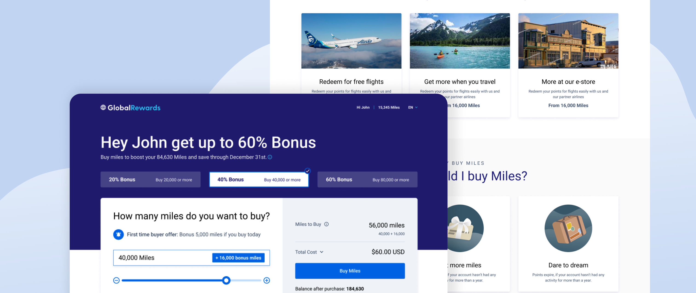
MY TEAM
Me — Product Designer
Jorge Watty — Design Lead
Ana Gamboa — Product
Manager
Jeremy Oudit — Director
MY ROLE
Product thinking, prototyping,
iterative design, interaction design
Project context
Points is a company that offers digital ecommerce solutions by partnering up with the world’s leading loyalty
programs to deliver new methods for customers to use their loyalty currency.
The goal of this project
was to redesign the current buy and gift experiences for Point’s white-label loyalty program storefront to drive
customer engagement and attract loyal customers.
PHASE 1 : DISCOVERY
Previous solution
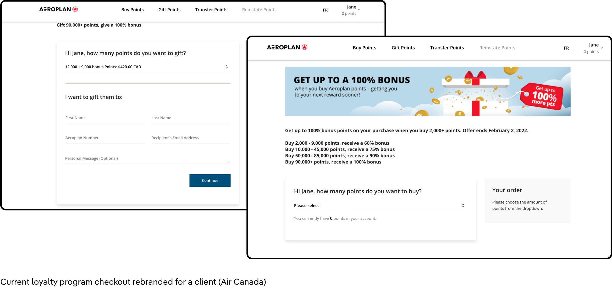
Based on user insights and feedback on the existing storefront design gathered from marketing, I narrowed it down
to 4 major opportunities for improvement.
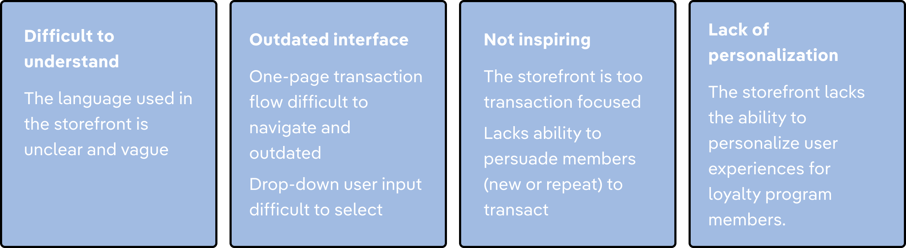
Market research
After understanding how users interacted with the current storefront, I researched other loyalty programs within
the travel industry. So taking a look at American Airlines, I noted down some features that worked well within
their design.
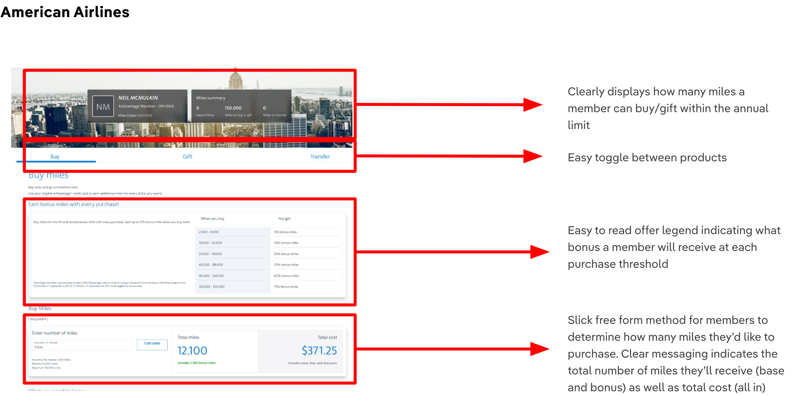
PHASE 2 : DEFINE
Who are our target users?
Based on research into our users, I put together two personas to illustrate who our current users are and who I
want the product to reach with the redesign.
Current users
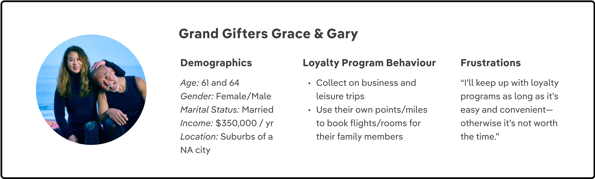
Target User
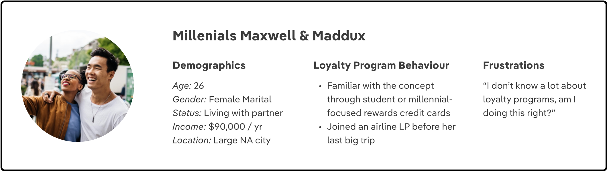
PHASE 3 : IDEATION
Information architecture
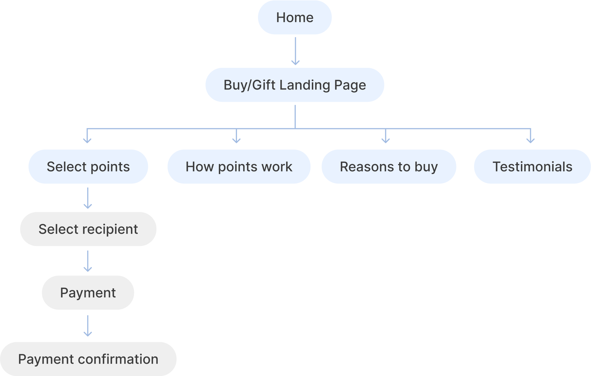
Iterative Design
Before deciding on a specific design, I brainstormed different variations of the design with the team.
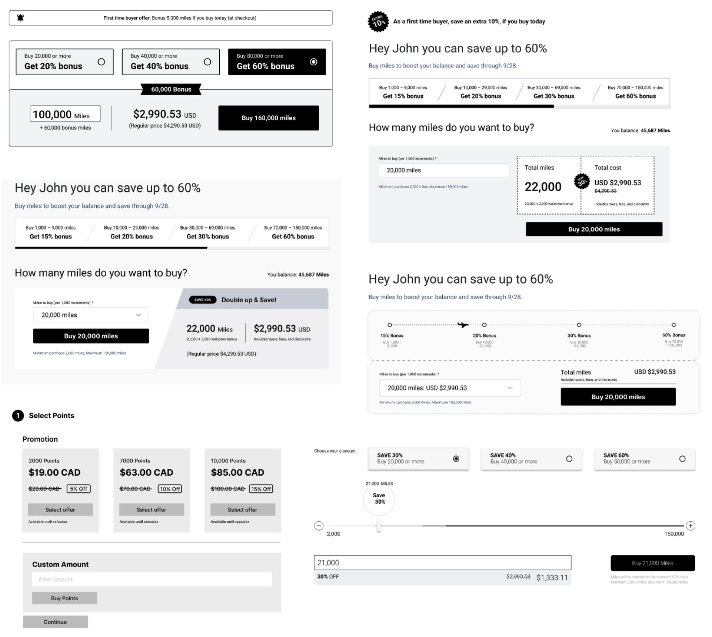
Narrowing it down
The team narrowed down the iterations to two different versions:
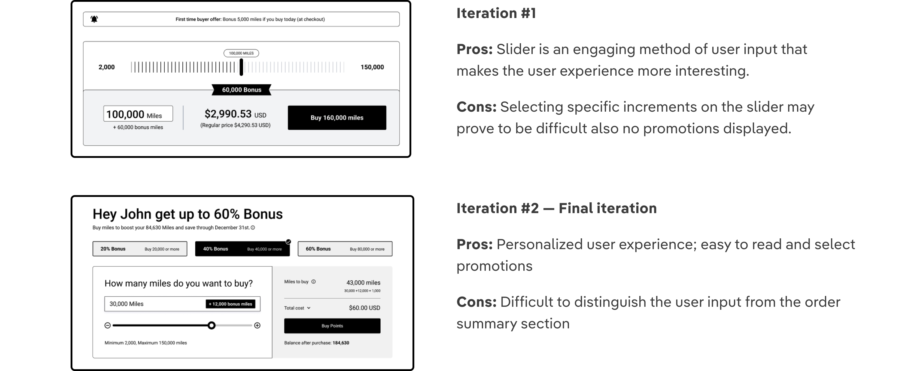
PHASE 4 : DELIVERY
Delivering the final redesign
As the final part of the redesign project, I was responsible for prototyping the final design in Webflow which
was then used within user testing and in client presentations.
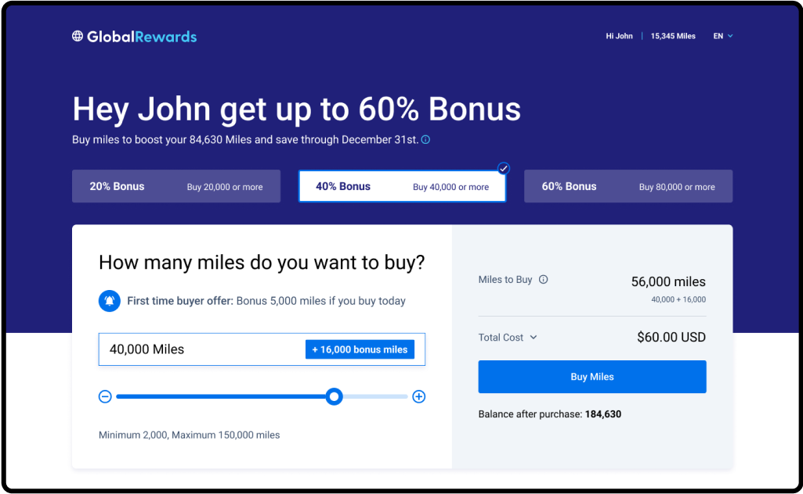
Selecting points to purchase
This section features a set of promotions that the user can choose from, an input field where they can adjust
the amount of points that they would like to purchase and brief order summary.
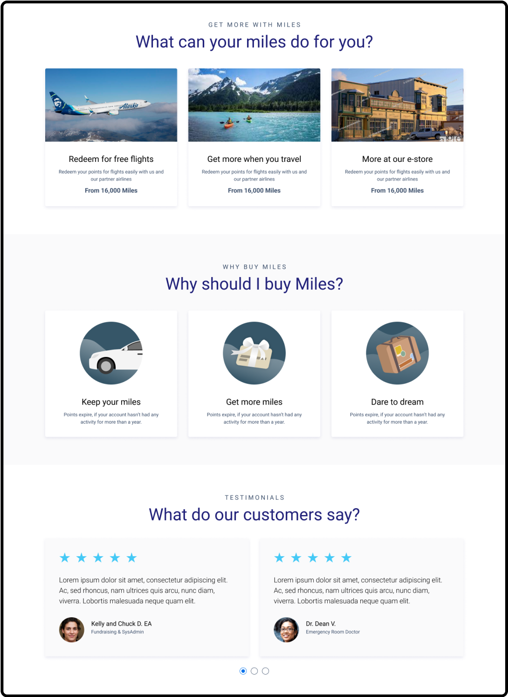
Explaining how points can be used
This section focuses on educating customers on what they can redeem their points for, why they should buy
points, and customer testimonials.
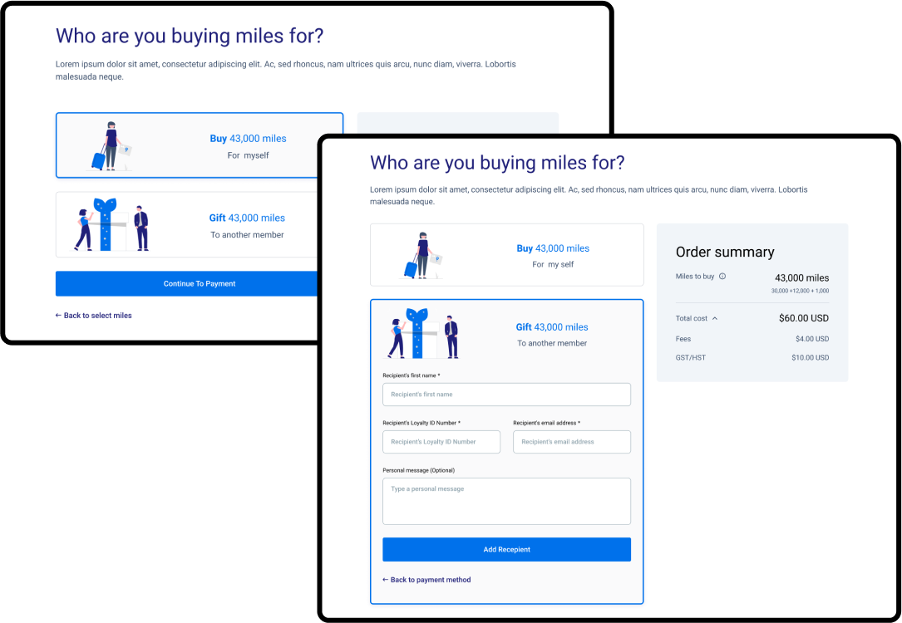
Recipient selection
This section allows the customer to toggle between buying points for themselves and buying points for another
person.
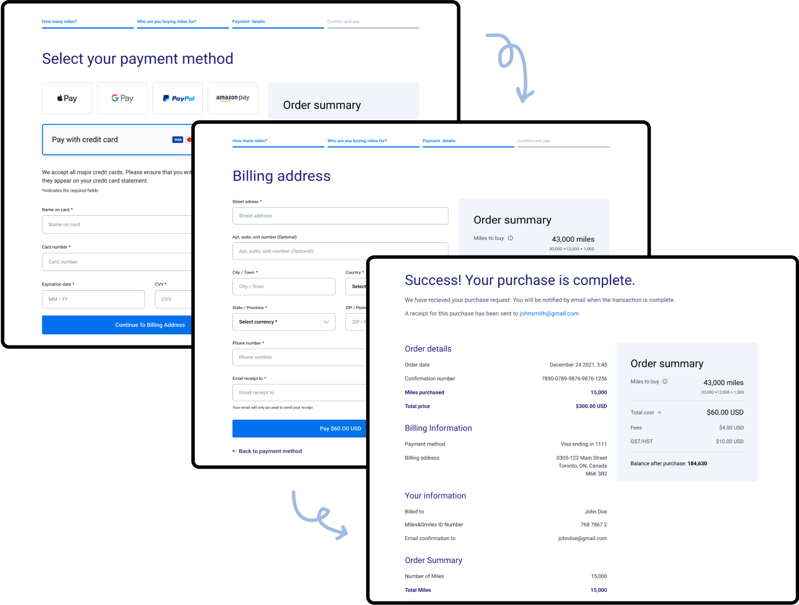
Payment flow
This section features the payment flow:
→ Selecting method of payment
→ Billing details
→ Order
confirmation
VALIDATION
User testing
What did we test?
We tested the mobile and desktop versions of the storefront on users.
Who did we interview?
There were two rounds of user testing sessions
1. Users under the age of 30
2. Users over the age of
30+
Next steps for the team
The next steps for the team are to make changes to the redesign based off of the user feedback from the testing
sessions. After the redesign has been finalized, the team will be moving ahead with showcasing these to our
current clients and moving it onto production .